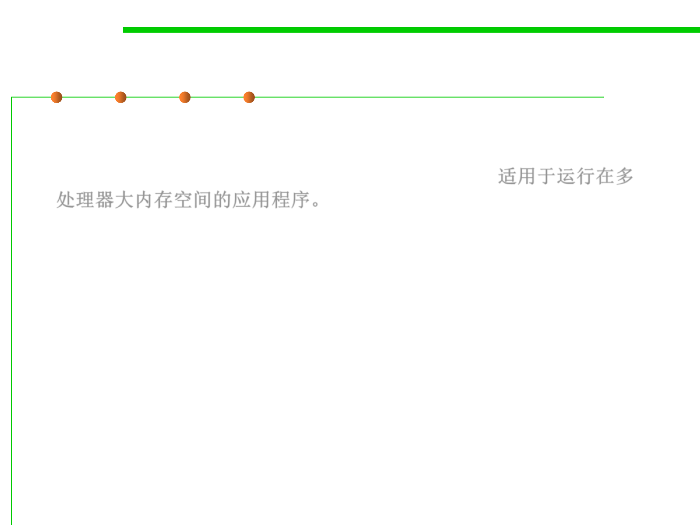

8.1 Metrics, Principles, and Methods of Construction for Performance
(2) Choosing a Garbage Collection Scheme
▪ G1 (Garbage First) Garbage Collector is designed for applications
running on multi-processor machines with large memory space. It’s
available since JDK7 Update 4 and in later releases. 适用于运行在多
处理器大内存空间的应用程序。
▪ Unlike other collectors, G1 collector partitions the heap into a set of
equal-sized heap regions, each a contiguous range of virtual
memory. When performing garbage collections, G1 shows a
concurrent global marking phase (i.e. phase 1 known as Marking) to
determine the liveness of objects throughout the heap.
▪ After the mark phase is completed, G1 knows which regions are
mostly empty. It collects in these areas first, which usually yields a
significant amount of free space (i.e. phase 2 known as Sweeping). It is
why this method of garbage collection is called Garbage-First.
▪ -XX:+UseG1GC